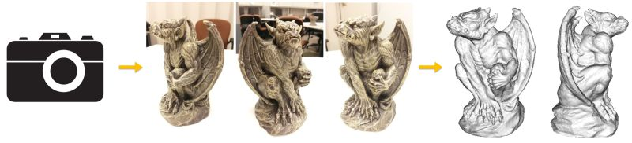

Mesh Reconstruction from ImageryThis work originates from the dense reconstruction module for the city 3D reconstruction project. I have extended it for more general 3D model acquisitions. Now you can use it to scan your object with a smarthpone!  System RequirementCurrent version is developed in Windows 7 64 bit platform using CUDA. An NVIDIA graphics card is needed. DownloadsMeshRecon-20150429-Win7-64bit.zip [4.8MB]Simple UsageStep 1. Put all images in the "img" folder. Step 2. Click "run.bat" to run. Step 3. Your have your model in the "results" folder. This simple usage uses the camera pose generated from VisualSFM (binary file already enclosed in the package for your conivence) by Changchang Wu. Thanks Changchang! DatasetHere are several datasets and the produced models that you can play with. All captured using my smartphone! Gargoyle: 23 images [8.9MB] model [1.7MB]Gnome: 27 images [6.8MB] model [1.3MB]Squirrel: 23 images [6.7MB] model [1.3MB]Woodland Squirrel: 20 images [5.1MB] model [1.0MB]License & DisclaimerUse it at your own risk. |